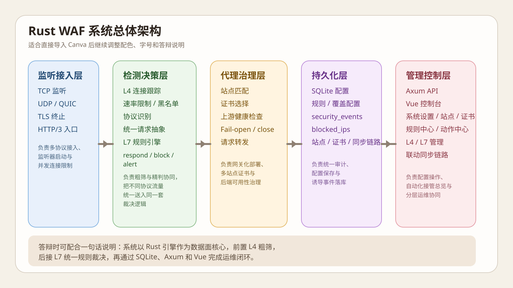
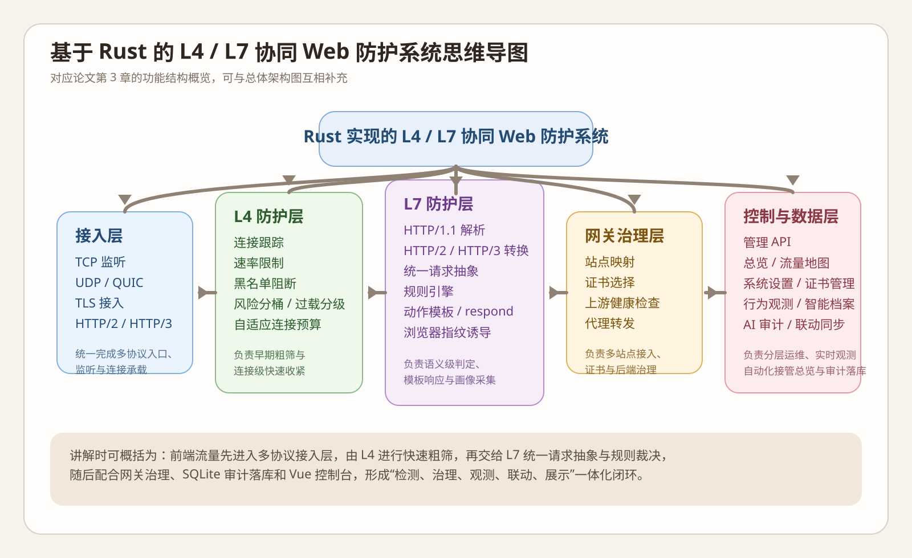
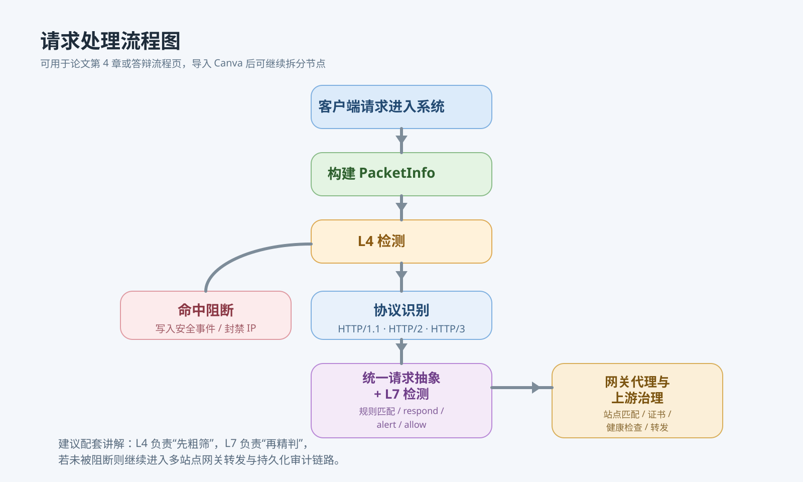
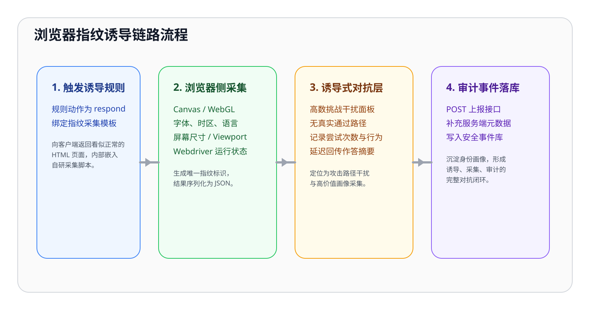
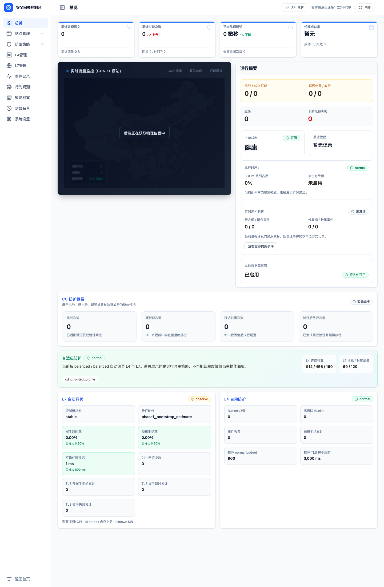
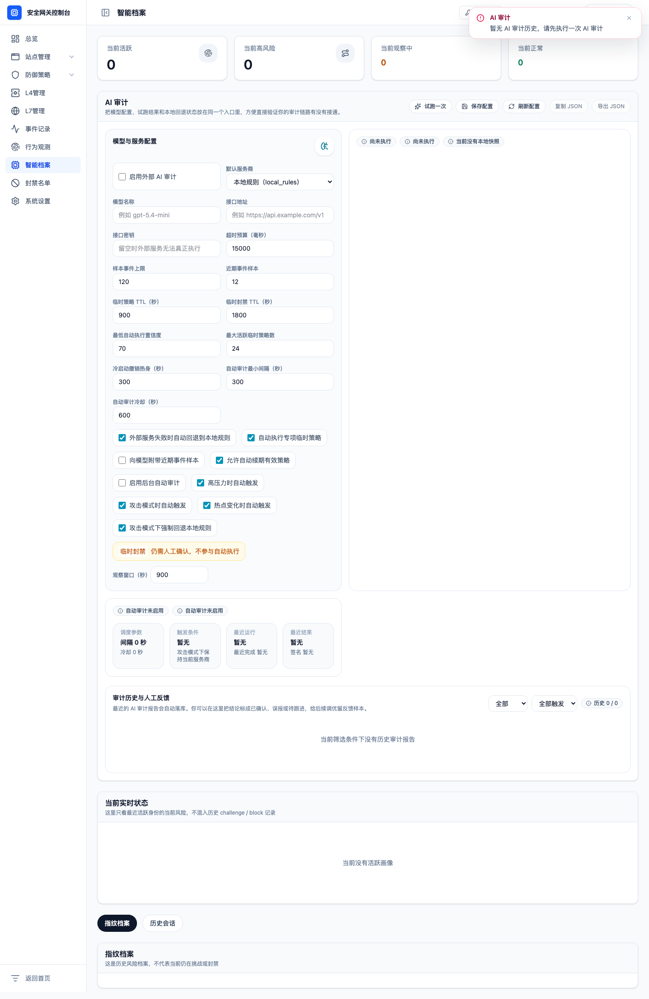
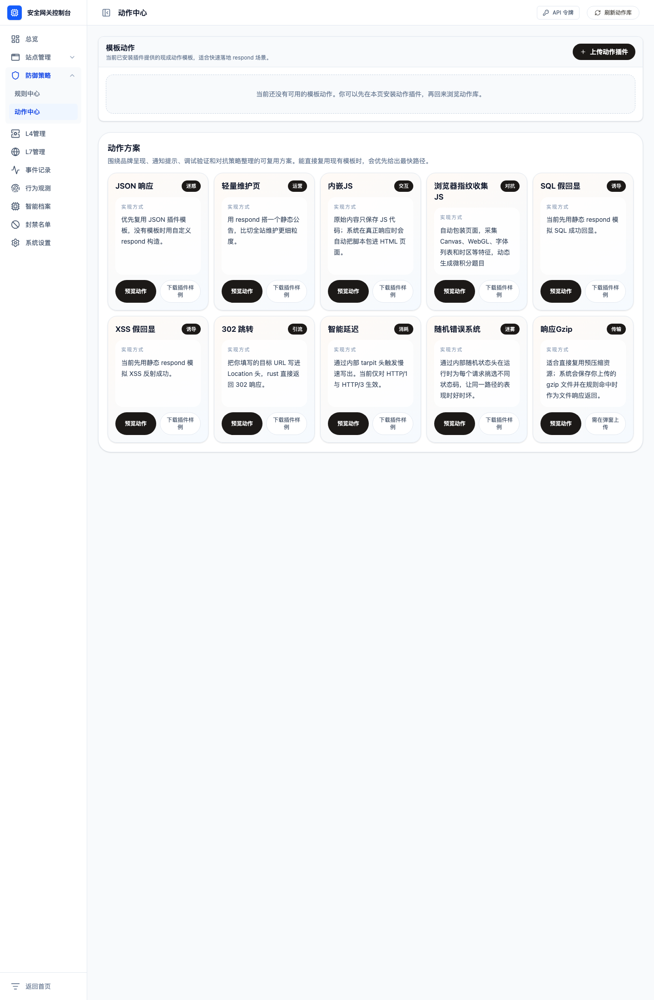
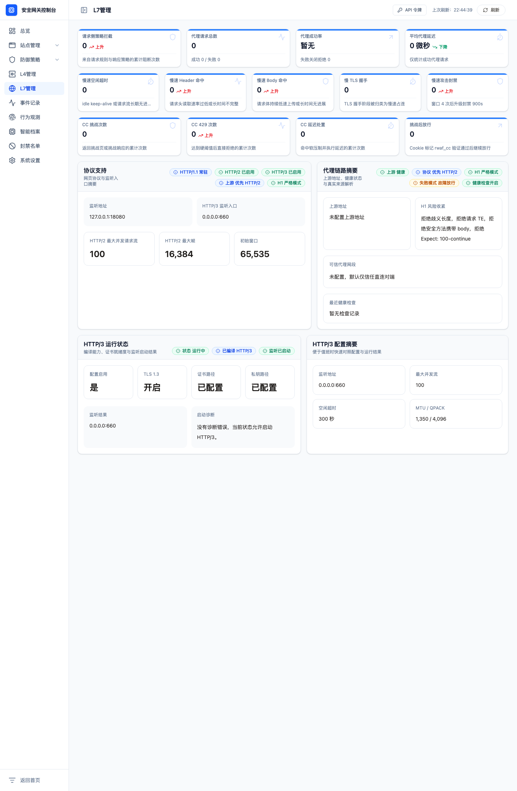

校内论文码：______________
学 号：______________
摘要
Abstract
1 绪论
1.1 研究背景、意义及方法
1.2 国内外研究现状
1.3 研究内容、方法与目标
1.4 论文结构安排
2 相关技术与理论基础
2.1 Rust语言与异步并发模型
2.2 L4/L7协同防护机制
2.3 HTTP多协议与统一请求抽象
2.4 规则匹配与Bloom Filter理论
2.5 数据持久化与管理控制面
3 系统需求分析与总体设计
3.1 系统建设目标
3.2 功能需求分析
3.3 非功能需求分析
3.4 系统总体架构设计
3.5 数据库设计
4 系统详细设计与实现
4.1 引擎启动与监听器管理
4.2 L4检测模块实现
4.3 L7检测与规则引擎实现
4.4 网关代理、证书与上游治理
4.5 SQLite持久化与SafeLine联动
4.6 管理API与前端控制台实现
5 系统测试与结果分析
5.1 测试环境与测试方法
5.2 功能测试结果
5.3 系统实现效果分析
5.4 存在的不足与改进方向
6 结论
参考文献
附录
诚信声明
致谢辞
随着Web应用逐步承载业务核心入口，单纯依赖边界防火墙、传统反向代理或静态规则列表的防护方式，已难以覆盖现代站点所面临的多协议接入、异常连接治理、应用层攻击识别、实时运营观测与联动处置等复合需求。围绕上述问题，本文设计并实现了一套基于Rust的L4/L7协同Web防护系统。系统以Tokio异步运行时为基础，在四层实现连接跟踪、速率限制、异常连接识别、风险分桶与黑名单处理，在七层实现HTTP/1.1、HTTP/2与HTTP/3流量接入、统一请求抽象、正则规则匹配、自定义阻断响应、动作模板复用、浏览器指纹诱导、TLS证书管理、上游健康检查与网关代理转发；同时基于SQLite构建配置、审计、画像与联动数据的统一存储层，并通过Axum管理API与Vue控制台提供可视化运维界面。
在实现过程中，系统强调“检测、治理、观测、联动”一体化的工程思路，而非仅把WAF视为单点拦截组件。最新实现中，L4行为引擎能够基于连接群风险和全局过载状态动态收紧keepalive、附加延迟或拒绝新连接，并在可信代理场景下联合“真实客户端地址”和“直接peer地址”两种身份视角合并预算策略；L7链路则将HTTP/1.1、HTTP/2与HTTP/3中的行为检测和CC检测统一前移到完整请求体读取之前，从而在轻量元数据阶段更早完成裁决。除此之外，系统还实现了自适应防护、自动调优、实时流量地图、行为画像、智能档案、AI审计与SafeLine联动等运行能力，使其从传统规则型WAF进一步扩展为具备安全运营支撑能力的轻量级安全网关平台。测试结果表明，该系统已能够完成从连接接入、风险识别、事件记录、画像沉淀到控制台展示的完整闭环；论文撰写期间实际执行cargo test共237项，全部通过，前端2项Vitest测试与生产构建验证亦全部通过，说明系统在主要功能路径、协议兼容性和工程可交付性方面具备较好基础。综合来看，Rust在内存安全、并发处理和组件化实现方面适合用于构建面向现代Web边界的防护系统，而L4/L7协同、实时观测与辅助决策相结合的设计模式，也为轻量级可扩展WAF的工程实践提供了较为可行的实现路径。
关键词：Rust；Web应用防火墙；L4/L7协同防护；实时观测；自适应防护
As Web applications increasingly become the core entry point of business systems, protection approaches that rely only on perimeter firewalls, static reverse proxies, or isolated rule lists are no longer sufficient for modern requirements such as multi-protocol traffic handling, abnormal connection governance, application-layer attack detection, real-time observability, and coordinated response. To address these challenges, this thesis presents the design and implementation of an L4/L7 collaborative Web protection system based on Rust. Built on Rust's asynchronous runtime, the system implements connection tracking, rate limiting, abnormal-connection detection, risk bucketing, and blacklist handling at Layer 4; and supports HTTP/1.1, HTTP/2, and HTTP/3 traffic access, unified request abstraction, regex-based rule matching, custom blocking responses, reusable action templates, browser-fingerprint deception, TLS certificate management, upstream health checks, and gateway proxying at Layer 7. SQLite is used as a unified persistence layer for configuration, audit, profiling, and synchronization data, while an Axum-based management API and a Vue console provide visual operations.
The implementation treats the system as an integrated security gateway rather than a standalone rule filter. The latest version extends Layer 4 with adaptive bucket-based connection governance and overload-aware policy export, merges trusted forwarded budgets across both resolved client identity and direct peer identity, and moves L7 behavior and CC inspection ahead of full request-body consumption in the HTTP/1.1, HTTP/2, and HTTP/3 pipelines. Beyond rule enforcement, the system also provides adaptive protection, auto-tuning, real-time traffic maps, behavior profiling, intelligence dashboards, AI audit workflows, and SafeLine synchronization, forming an operational loop from traffic intake and risk decision to evidence persistence and console presentation. During thesis verification, cargo test executed 237 backend tests and all passed; meanwhile, 2 frontend Vitest cases and the production build also succeeded. This indicates that the current engineering path is operational and that key protocol handling, gateway routing, observability, and management behaviors already have stable regression coverage. The study suggests that Rust is well suited for building modern Web protection systems, and that combining L4/L7 collaboration with real-time observability and assisted decision-making provides a practical path for lightweight and extensible WAF engineering.
Key words: Rust; Web Application Firewall; L4/L7 Collaborative Protection; Real-Time Observability; Adaptive Protection
在云原生、微服务与前后端分离架构广泛应用的背景下，Web应用已经成为学校、企业和政务系统最主要的业务承载形态。与传统静态站点不同，现代Web系统既要面向公网持续开放访问接口，又要同时处理身份认证、文件上传、动态脚本执行、第三方API调用和跨域交互等复杂业务流程，这使得SQL注入、跨站脚本、恶意扫描、暴力请求、异常流量放大与协议绕过等安全风险更加突出[1]。仅依赖网络边界设备或单一服务器安全策略，往往难以在协议细节、攻击语义与运行态可观测性之间取得平衡。
Web应用防火墙是介于客户端与Web服务器之间的专用安全组件，其核心目标是通过反向代理、规则引擎和协议分析等机制，对HTTP会话和相关网络流量进行识别、过滤与拦截[1][2]。在实际部署中，单纯依赖应用层规则虽然有更强的语义表达能力，但也会引入更高的计算开销与更复杂的解析路径；如果只做网络层或连接层过滤，则难以识别具体的URI、Header、请求体和协议元数据。因此，将L4快速过滤与L7精细识别组合起来，构建分层协同的防护体系，具有明显的现实价值。
另一方面，近年来HTTP协议栈持续演进。HTTP/2通过多路复用与头部压缩改善了传统HTTP/1.1的队头阻塞问题，HTTP/3则进一步以QUIC为基础运行在UDP之上[7][8][9]。这意味着现代WAF若要具备实用价值，不仅要能理解传统TCP上的HTTP/1.1，还应具备面向HTTP/2和HTTP/3的处理思路。与此同时，安全系统本身也需要兼顾稳定性、并发效率和可维护性。Rust语言因其内存安全、零成本抽象和异步并发能力，在系统级网络软件开发领域逐渐受到重视[4][5]，适合用于实现高可靠、可扩展的边界防护组件。
基于上述背景，围绕一个实际实现的Rust项目开展论文写作，具有三方面意义。第一，在理论层面，可总结L4/L7协同防护、统一请求抽象、规则匹配与存储管理的设计方法。第二，在工程层面，可验证Rust在异步网络服务、安全代理和控制面开发中的适用性。第三，在应用层面，可为高校课程设计、轻量级边界防护和中小型站点安全加固提供具有参考价值的实现路径。
本文的研究方法主要包括四类：一是文献研究法，通过阅读WAF、HTTP/2、HTTP/3、QUIC、TLS和Rust相关文献与标准，为系统设计建立理论依据；二是系统分析法，围绕项目代码中的模块职责、数据流与交互路径进行结构化归纳；三是原型实现法，以现有Rust项目为基础，对核心模块进行工程化整理与实现总结；四是测试验证法，通过单元测试、构建验证和功能链路分析，对系统的可运行性与完整性进行论证。
国外针对WAF的研究和工程实践起步较早。OWASP社区将WAF定义为部署在Web应用前方、面向HTTP会话进行规则过滤和逆向代理控制的安全组件[1]。围绕开源WAF体系，ModSecurity长期被视为事实上的行业标准开源引擎，OWASP Core Rule Set则提供了通用攻击规则集合，使得“引擎+规则集”成为开源WAF的典型组织方式[2][3]。WAFEC项目进一步从能力评估视角，对WAF的功能、部署方式、规则维护与适配难度进行了系统梳理[15]。这些研究与工程成果说明，现代WAF已经从单纯的过滤组件，发展为集代理、检测、响应、审计与运维于一体的综合平台。
在协议支持方面，HTTP/2、HTTP/3和QUIC相关标准的推出，推动WAF从“面向HTTP/1文本请求”的早期模式转向“面向多协议、多传输层场景”的新阶段[7][8][9][10]。HTTP/3运行在QUIC之上，虽然带来了性能与可靠性收益，但也提升了边界设备在连接识别、证书配置、协议解码和流量可视化方面的实现难度。由此可见，多协议适配能力正在成为衡量新一代WAF工程成熟度的重要维度。
在数据结构与检测效率方面，Bloom提出的空间换时间思想为高频集合判断提供了经典方法[6]。该思想已经被广泛应用于缓存、去重、黑名单预判和高吞吐筛选系统中。将Bloom Filter引入WAF或边界风控系统，可以在黑名单、特征集合或预过滤阶段降低常规查找开销，但同时会带来误判概率，需要与精确验证机制配合使用。这种“快速预判+精确校验”的模式，对轻量级WAF设计具有较强启发意义。
在系统实现语言方面，Rust生态的成熟为安全系统提供了新的实现选择。相比传统C/C++网络程序，Rust通过所有权、借用检查和类型系统降低了内存越界、悬垂指针和并发数据竞争等风险[4][5]。对于需要长期稳定运行、同时处理大量连接与协议状态的边界防护系统而言，Rust能够在安全性与性能之间形成较好平衡。
国内相关研究更多聚焦于反向代理部署、入侵防御策略、规则匹配优化和业务场景定制，工程实践中也常通过Nginx/OpenResty、云WAF或安全网关产品完成访问控制。然而，针对“Rust + 多协议 + L4/L7协同 + 本地控制台”的一体化轻量级系统化实现并不多见。基于此，本文尝试在现有工程项目基础上，构建一套兼顾规则检测、协同治理、持久化管理和可视化运维的Web防护系统，以补足传统课程论文中“理论多、实现少”或“实现有、架构弱”的不足。
本文的研究对象是一套基于Rust实现的L4/L7协同Web防护系统。系统后端以Tokio异步运行时为核心，结合Axum提供管理API，使用SQLite完成配置、事件、画像与联动信息持久化，并通过Vue实现面向运维场景的控制台界面。其核心研究内容包括：一是构建面向TCP、UDP、TLS和HTTP多协议的接入与分流机制；二是设计L4与L7检测协同工作流程，实现速率限制、连接跟踪、规则匹配与自定义响应；三是建立面向站点、证书、规则、事件、行为会话和AI审计结果的统一存储模型；四是实现可视化管理能力，包括规则配置、动作模板、站点与证书管理、联动同步、实时态势观测、行为画像与辅助审计。
在方法层面，本文不是单纯停留在功能介绍，而是从项目源码出发，对引擎启动、监听器管理、请求统一抽象、事件持久化、数据库建模和控制台交互进行逐层分析。通过将项目中的真实代码路径与论文中的系统设计模型相对应，保证论文结论与工程事实一致，避免出现“论文写得很大、代码做得很小”的脱节问题。
围绕上述内容，本文拟达到以下目标：其一，设计一个结构清晰、模块边界明确的安全网关总体架构；其二，实现支持HTTP/1.1、HTTP/2、HTTP/3的统一请求抽象与协同检测流程；其三，在不依赖大型外部中间件的前提下，完成本地可运行、可配置、可持久化、可观测、可联动的防护系统原型；其四，在传统WAF能力基础上补入行为画像、实时态势展示、自适应参数管理与AI审计辅助决策，使系统更贴近真实运维场景；其五，通过测试结果分析系统的实际效果、当前不足及后续优化方向。
全文共分为六章。第一章介绍研究背景、意义、国内外研究现状以及论文研究内容。第二章梳理与系统实现相关的关键技术和理论，包括Rust异步并发、L4/L7协同、防护规则与Bloom Filter等。第三章对系统需求与总体架构进行分析，说明系统目标、模块划分和数据库设计。第四章结合项目代码展开详细设计与实现分析，是全文的核心。第五章对系统测试、结果和不足进行总结。第六章给出全文结论，并对后续工作进行展望。
Rust是一种面向系统编程的现代语言，强调内存安全、零成本抽象与高性能并发[4][5]。对于WAF这类常驻边界服务而言，程序需要长时间保持监听状态，并同时处理大量连接、数据包和请求对象。传统实现中，内存错误、线程同步失误和资源泄漏是造成系统不稳定的重要来源。Rust通过所有权机制在编译阶段约束资源生命周期，使得网络服务在保持性能的同时具备更高的可靠性。
本文项目采用Tokio异步运行时构建服务入口。异步模型通过事件驱动方式管理大量IO任务，相较于“一连接一线程”的传统模型，可以更高效地支撑并发连接场景。在工程实现中，系统为TCP监听、UDP监听、TLS监听和HTTP/3监听分别启动异步任务，并通过信号量限制并发连接数，既体现了异步并发的优势，也降低了资源失控风险。
L4防护主要关注源IP、目的IP、端口、传输协议、连接频率和连接状态等信息，其优点是处理路径短、判定速度快，适合用于速率限制、异常连接过滤、黑名单处理和初步DDoS识别。L7防护则聚焦HTTP方法、URI、Header、Body、协议版本、代理元数据和业务特征，适合用于识别SQL注入、路径探测、恶意脚本片段和规则化攻击。两者并非替代关系，而应形成“先粗筛、后精判”的协同关系。
本文系统将L4检测前置于连接处理链路。对于TCP、TLS、UDP和HTTP/3连接，系统首先构造PacketInfo对象，完成连接跟踪、速率检查和L4规则判断；若L4阶段已确定阻断，则可直接返回并记录事件，从而节省后续协议解析和代理转发开销。只有通过L4检查的数据，才会进入协议检测、统一请求抽象和L7规则处理流程。在可信代理已经确认的转发链路中，系统还会同时参考“解析出的真实客户端地址”和“直接连接peer地址”两套身份分桶，为后续连接预算与风险收紧提供更稳妥的依据。这种架构充分体现了分层协同思想。
为便于形式化描述，若以某一源地址在时间窗口Δt内的连接数记为Ri(Δt)，以阈值T表示允许的最大速率，则可将速率限制条件描述为：
Ri(Δt) > T ⇒ block(i) （2-1）
该表达式对应系统中连接限流器的核心思路：当同一源地址在单位窗口内的请求计数超过阈值时，系统将触发拒绝，并在满足条件时把该地址加入运行态阻断集合。
传统WAF大多直接面向HTTP/1.1文本请求进行解析，但现代Web环境中，HTTP/2和HTTP/3已经成为高性能站点的重要协议基础[7][8][9]。不同协议在帧结构、头部组织、连接方式和传输层上存在较大差异，如果为每一种协议单独编写完整检测逻辑，不仅会造成代码重复，也会使规则表达与管理复杂化。
为解决这一问题，本文系统引入统一请求抽象UnifiedHttpRequest。无论请求来自HTTP/1.1、HTTP/2还是HTTP/3，系统都会将其转换为统一结构，提取方法、URI、Header、请求体、客户端地址和协议元数据等内容，再统一交由L7检测与规则引擎处理。这种做法的价值在于将“协议解析”与“安全判断”解耦，提升系统可扩展性。未来若接入新的协议版本或特殊网关元数据，也可以通过补充转换层，而无需重写检测主逻辑。
在检测策略方面，规则引擎是WAF最核心的能力之一。本文系统采用基于正则表达式的规则描述方式，将规则分为L4与L7两层，并支持allow、block、alert和respond四类动作。L4规则对数据包摘要字符串进行匹配，L7规则对统一请求序列化后的文本进行匹配。若规则命中，系统根据动作类型执行放行、阻断、告警记录或返回自定义HTTP响应。
为了提升部分场景下的查询效率，系统还保留了Bloom Filter相关模块，用于支持IP、IP:Port、URL、Header、Cookie、Payload等快速集合判定。Bloom Filter的误判概率可以表示为：
p = (1 - e-kn/m)k （2-2）
其中，m表示位数组长度，n表示插入元素个数，k表示哈希函数个数[6]。该公式表明，在给定存储空间下，Bloom Filter可以通过牺牲少量误判概率换取更低的集合查询开销。对于WAF而言，它更适合做快速预筛和黑名单命中预判，而不适合单独作为最终裁决依据，因此系统中同时保留了误判校验相关配置项。
工程化WAF不仅要具备拦截能力，还要能够记录事件、维护配置、支撑运维与审计。因此，持久化与控制面是系统不可缺少的组成部分。本文系统采用SQLite作为嵌入式存储引擎，原因在于其部署轻量、依赖少、事务支持完整，适合课程项目和中小规模边界节点[13]。系统在数据库中定义了安全事件、阻断IP、规则、插件模板、证书、站点、同步状态和应用配置等多类表结构，为运行态审计和管理界面提供了统一数据源。
在控制面方面，系统后端通过Axum对外暴露REST风格接口，前端采用Vue构建管理台，实现运行监控、规则管理、动作模板管理、站点管理、证书管理、全局设置、系统设置、自适应防护状态展示、L4/L7兼容模式参数维护以及SafeLine联动等功能。当前控制台进一步把“自动化接管项”与“独立运行项”分层呈现，使高频运行参数和低频回滚参数的入口更加清晰。这种“数据面与控制面分离”的模式，使系统既能在边界侧承担实时防护职责，又能在运维侧保持较好的可管理性和可扩展性。
本文系统定位为一套轻量级、可本地运行、具备多协议接入和L4/L7协同能力的Web防护系统，同时也是一个面向日常运维和值守分析场景的安全网关平台。结合项目实现情况，系统的建设目标主要包括：第一，能够对进入边界的TCP、UDP、TLS和HTTP/3流量进行统一接入与分发；第二，支持四层连接级快速拦截与七层请求级规则处理；第三，支持站点配置、证书管理、规则管理、动作模板管理、事件与画像持久化；第四，提供可视化控制台、实时态势页和辅助审计接口，便于运维人员观察系统运行状态、识别风险并调整策略。
从业务功能角度看，系统至少应覆盖以下能力。其一，基础接入能力，包括监听地址配置、TCP与UDP监听、TLS接入以及HTTP/2、HTTP/3协议处理。其二，L4防护能力，包括连接跟踪、单位时间窗口内的速率限制、黑名单阻断、简单DDoS检测，以及基于连接群分桶的自适应预算控制，并在可信转发场景中支持面向客户端身份与peer身份的双视角预算合并。其三，L7防护能力，包括HTTP请求解析、统一请求抽象、规则匹配、告警记录、自定义阻断响应、动作模板复用，以及在特定诱导场景下对浏览器指纹回传和前端干扰页的支持。其四，代理治理能力，包括站点解析、证书选择、上游健康检查和请求转发。其五，运行态治理能力，包括自适应防护、自动调优、运行时压力分级、可信CDN来源同步和兼容参数归档。其六，控制面能力，包括规则管理、动作模板管理、证书管理、证书预检与同步、站点管理、全局设置、系统设置、统计看板、自适应防护状态概览，以及将L4/L7页面中的独立运行参数与兼容层中的自动化接管归档参数分开展示的专项排障入口。其七，观测与研判能力，包括实时流量地图、行为观测、智能档案、来源系统区分、行为会话回看和AI审计报告。其八，审计与联动能力，包括安全事件持久化、阻断IP记录、同步状态追踪、SafeLine双向同步以及AI临时策略的记录与反馈闭环。
结合项目当前代码统计，系统后端 `src` 目录包含163个Rust源文件，前端 `vue/src` 目录包含123个Vue、TypeScript与样式文件；按 `.route(...)` 定义计，API层共声明67条路由；SQLite模式中包含22张数据表和38个索引。这说明项目已经具备较为完整的工程组织形态，不再是单一功能实验，而是一个包含数据面、防护逻辑、存储层和控制面的系统化实现。
除功能需求外，系统还需要满足若干非功能目标。第一，运行稳定性。由于系统位于站点流量入口，其请求处理链路不能依赖复杂外部服务才能启动，因此当前实现优先采用本地SQLite、内置默认证书处理和Rust单体进程部署，以降低环境依赖。第二，协议一致性。HTTP/1.1、HTTP/2与HTTP/3在进入统一检测链之前需要尽量完成等价抽象，避免不同协议下出现规则行为分裂。第三，可观测性。系统不仅要给出拦截结果，还应输出最近事件、流量地图、L4/L7预算快照、自适应压力态、AI审计摘要和行为画像，便于运维人员解释“为什么当前策略被收紧”。第四，可维护性。规则、动作模板、站点、证书、联动状态和临时策略需要具备统一持久化能力，控制台中的高频参数与低频兼容参数也需要分层呈现。第五，可扩展性。系统需要允许后续继续增加新的协议接入、动作模板、规则插件和外部联动模块，而不必推翻现有总体结构。
表3-1 功能需求与模块映射关系
| 需求类别 | 对应模块 | 实现说明 |
|---|---|---|
| 接入监听 | WafEngine、TCP/UDP/TLS/HTTP3监听器 | 负责多协议连接接入、任务分发与并发控制 |
| L4防护 | L4Inspector、ConnectionTracker、ConnectionLimiter | 负责连接跟踪、限流、封禁与简化DDoS识别 |
| L7防护 | L7Inspector、UnifiedHttpRequest、RuleEngine | 负责请求抽象、规则匹配、告警和阻断响应 |
| 网关治理 | GatewayRuntime、TLS解析、上游健康检查 | 负责站点匹配、证书选择、代理与故障策略控制 |
| 数据持久化 | SqliteStore、schema、models、query | 负责配置、规则、证书、站点、事件、画像与联动状态存储 |
| 控制台 | Axum API、Vue页面与组合式逻辑 | 负责管理操作、实时态势、行为观测、AI审计与联动配置 |
除功能需求外，系统还应满足若干非功能需求。首先是安全性。作为防护系统本身，程序应避免因内存错误、并发竞争或不安全文件访问而引入新的漏洞。本文系统选择Rust并对规则响应文件路径进行限定，就是出于这一考虑。其次是并发性。WAF位于请求链路前方，需要面对多连接并发接入，因此系统应具有良好的异步处理能力和资源限制策略。再次是可维护性。系统配置、规则、站点和证书等信息不能全部硬编码在程序中，而应支持数据库持久化和控制台维护。最后是可观测性。系统应能输出健康状态、代理延迟、拦截统计和安全事件记录，为后续调优和运维提供依据。
根据项目实现，系统采用“监听接入层、检测决策层、代理与治理层、持久化层、管理控制层”五层架构。监听接入层负责创建TCP、UDP、TLS和HTTP/3监听器，并控制并发连接数量。检测决策层负责L4检查、协议识别、统一请求抽象、L7检查和规则动作裁决；其中L4层可在可信转发场景下合并客户端身份与peer身份的分桶策略，L7层则在完整请求体读取前先基于轻量元数据执行行为检测和CC检测。代理与治理层负责证书加载、站点匹配、上游地址选择、健康检查和请求转发。持久化层负责配置、规则、证书、站点和安全事件的数据库存储。管理控制层通过API和前端界面实现可视化运维与配置调整。
图3-1 系统总体架构示意

这种结构的优点在于职责清晰。L4主要承担快速裁决和运行态防护，L7负责精细化请求识别，代理层负责业务转发和站点治理，持久化层则为控制面和审计提供基础。由于各模块之间通过上下文和统一结构对象衔接，系统在扩展协议和新增策略时具有较好伸缩性。
为支撑控制台、规则引擎、行为研判与联动同步，系统在SQLite中定义了多类数据表。安全事件表用于记录拦截、告警与诱导动作产生的运行日志，阻断IP表用于记录运行态封禁结果，规则表与插件模板表用于维护防护策略，应用配置表用于保存系统参数，站点与证书相关表用于网关管理，行为画像与会话表用于沉淀活跃身份、行为轨迹与历史风险，AI审计与临时策略表用于记录审计报告、反馈结果和临时处置建议，SafeLine相关表则用于记录缓存站点、映射关系和同步状态。通过索引设计，系统可以在按时间、按源地址、按来源系统、按画像身份和按同步状态查询时获得更稳定的响应。
图3-2 系统思维导图

表3-2 主要数据库表设计
| 表名 | 主要用途 | 关键字段 |
|---|---|---|
| security_events | 记录L4/L7安全事件与扩展上报事件 | layer、action、reason、provider、provider_event_id、details_json、created_at |
| blocked_ips | 记录被封禁IP | ip、reason、blocked_at、expires_at |
| rules | 保存防护规则 | id、layer、pattern、action、severity |
| app_config | 保存系统配置 | config_json、updated_at |
| local_sites | 本地站点管理 | primary_hostname、listen_ports_json、upstreams_json |
| local_certificates | 本地证书信息 | name、domains_json、issuer、valid_to |
| site_sync_links | 远程站点与本地站点映射 | local_site_id、provider、remote_site_id、sync_mode |
| fingerprint_profiles | 记录浏览器或身份画像摘要 | identity、source_ip、latest_score、latest_action、reputation_score |
| behavior_sessions | 记录行为会话聚合结果 | session_key、identity、dominant_route、challenge_count、block_count |
| ai_audit_reports | 记录AI审计报告与反馈 | generated_at、provider_used、risk_level、report_json、feedback_status |
| ai_temp_policies | 记录临时策略建议与命中效果 | policy_key、scope_type、action、suggested_value、confidence、effect_json |
| safeline_sync_state | 联动状态记录 | resource、last_cursor、last_success_at |
从结构上看，该数据库并非仅服务于日志写入，而是承担了“配置中心 + 审计中心 + 画像仓 + 联动缓存”的复合角色。这也使得整个系统可以在无需独立配置服务或额外分析数据库的前提下，实现较完整的控制、观测和辅助决策能力。
系统入口由Rust二进制程序启动，在加载环境变量后调用库中的run方法完成配置读取与引擎构建。配置优先从SQLite加载，若数据库中不存在应用配置，则写入默认配置并进行归一化处理；若缺少可用默认证书，启动流程还会自动复用已有本地证书，或为HTTPS/HTTP3场景生成启动自签证书并回写数据库。WafContext在初始化过程中负责装配L4检测器、L7检测器、规则引擎、指标收集器、SQLite存储对象、网关运行时、自适应防护运行态、自动调优快照、实时流量采集器和AI审计运行时信息，是运行期间最核心的共享上下文。
引擎启动后，会根据配置分别为TCP、UDP、TLS和HTTP/3创建监听任务，并以信号量限制并发连接数量。每类监听器都在独立异步任务中运行，当接收到新连接或数据报文时，再派生子任务进行处理；同时，HTTP/3运行时会额外记录“特性是否可用、证书是否齐全、监听是否已启动、最近错误”等状态信息，供控制台直观展示。该设计一方面提高了多协议监听的并发能力，另一方面也避免单类协议阻塞影响其他通道。
除实时请求链路外，系统还在启动后并行启动多类后台维护任务，包括上游健康检查循环、规则热加载检查、SafeLine自动同步、Trusted CDN来源同步、实时采样广播、自动调优控制步进以及AI自动审计触发判断等。换言之，当前实现已经形成“请求处理链路 + 后台治理链路 + 实时观测链路”的三类运行机制：前者负责阻断与转发，第二类负责配置、联动和策略更新，第三类负责把指标、事件、封禁变更与流量态势持续推送到控制台，从而构成更接近真实生产运维的完整运行时。
从部署视角看，当前系统更接近一个可独立落在站点边界前方的单节点安全网关。外部客户端流量首先进入本系统的TCP/TLS/HTTP入口，随后由L4模块进行连接级粗筛，再将通过的HTTP流量交给L7统一请求抽象与规则裁决；若请求需要继续放行，则系统基于站点配置、证书选择和上游健康状态把流量转发到后端业务站点。与此同时，控制台通过Axum管理API读取运行指标、配置项、事件与画像数据，WebSocket实时通道继续推送最近事件、封禁变更和流量增量；SafeLine与Trusted CDN同步逻辑则通过后台任务周期性更新外部状态。这样的拓扑说明，项目并不是“浏览器页面 + 若干接口”的演示程序，而是具备入口流量承载、后端代理和控制面协同的完整边界组件。
表4-1 系统核心模块职责划分
| 模块名称 | 所属层次 | 主要职责 |
|---|---|---|
| WafEngine | 引擎层 | 负责上下文装配、监听器启动、任务调度与维护循环 |
| WafContext | 共享上下文层 | 负责保存配置、检测器、规则引擎、指标和存储对象 |
| L4Inspector | 四层检测层 | 负责限流、封禁、Bloom预筛和简化攻击识别 |
| RuleEngine | 七层裁决层 | 负责规则编译、匹配和动作执行 |
| GatewayRuntime | 网关层 | 负责站点索引、证书解析和上游定位 |
| SqliteStore | 持久化层 | 负责事件、规则、站点、证书、画像与配置的数据库读写 |
| ApiServer | 控制面后端 | 负责管理接口暴露、实时推送与前端数据支撑 |
| AdaptiveProtection / AutoTuning | 运行治理层 | 负责根据运行压力动态收紧L4/L7参数，并保留评估与回滚依据 |
| TrafficMapCollector / AI Audit | 观测分析层 | 负责实时流量态势采样、行为画像、审计摘要与辅助决策输出 |
L4检测模块由L4Inspector、ConnectionManager、ConnectionTracker、ConnectionLimiter和L4BehaviorEngine等组件组成。每当有新TCP连接、TLS连接、UDP报文或QUIC连接进入系统时，都会先根据源地址、目的地址、端口和协议构造PacketInfo，再调用inspect_transport_layers完成传输层检查。检测流程首先进行连接跟踪，然后执行速率限制，再根据需要执行Bloom Filter检查和简单DDoS检测，最后才进入L4规则匹配阶段。
连接跟踪器负责统计源地址在时间窗口内的连接次数与访问端口集合，并通过最大跟踪容量限制内存占用。速率限制器维护一个基于IP的计数窗口和阻断集合，当某个地址在1秒内的连接次数超过配置阈值时，会返回RejectedAndBlocked，并在一定时间内保持封禁状态。对于明显的短时突发连接，系统还会根据阈值和持续窗口执行简化DDoS识别逻辑，将异常源加入阻断集合。
在此基础上，L4BehaviorEngine进一步把连接群按照 `(peer_ip, authority, alpn, transport)` 组织为细粒度分桶，并在分桶过多时退化到更粗粒度聚合视角。运行期它持续接收“连接建立、连接关闭、请求观测、L7反馈、SafeLine反馈”等事件，计算分桶风险分值、近10秒连接数、近120秒反馈次数、平均连接寿命和累计字节数，再根据风险级别和全局过载态导出自适应策略。对于已确认属于可信CDN或可信代理转发的请求，行为引擎会额外构造peer侧分桶键，并把客户端身份分桶与peer分桶的策略结果合并后再下发到请求元数据中，从而在双身份预算场景下优先取更保守的连接预算、延迟和拒绝策略。该策略不仅可给出每分钟连接预算，还可收紧keepalive、建议附加延迟，或在高压场景下直接拒绝新连接，从而把传统L4“是否阻断”的单一裁决扩展为“限流 + 降级 + 延迟 + 拒绝”的多级策略链。
随着自适应防护逐步成为主入口，系统在管理侧进一步把“自动化接管项”和“独立运行项”分开呈现。当前实现中，自适应状态与关键预算集中展示在系统设置页，而L4主页面保留连接速率、SYN阈值、跟踪容量、封禁表容量、状态保留和Bloom缩放等独立运行参数；至于行为引擎预算、过载延迟和拒绝阈值，则归档到兼容模式入口中，供策略回滚、专项排障或教学对比时单独编辑。这样的设计避免了常规运维界面被过多低频参数淹没，也保留了旧策略链路的可解释性与可回退性。
表4-2 L4行为引擎关键可调参数
| 参数类别 | 代表字段 | 作用说明 |
|---|---|---|
| 事件承压 | behavior_event_channel_capacity、behavior_drop_critical_threshold | 控制行为事件通道容量和丢弃事件触发临界值 |
| 分桶退化 | behavior_fallback_ratio_percent | 在分桶数量逼近上限时切换到更粗粒度聚合，降低内存压力 |
| 连接预算 | behavior_normal_connection_budget_per_minute、behavior_suspicious_connection_budget_per_minute、behavior_high_risk_connection_budget_per_minute | 为正常、可疑、高风险连接群分别设定基础预算 |
| 过载缩放 | behavior_high_overload_budget_scale_percent、behavior_critical_overload_budget_scale_percent | 在High或Critical过载态下降低预算，优先保证系统整体稳定 |
| 延迟控制 | behavior_soft_delay_threshold_percent、behavior_hard_delay_threshold_percent、behavior_soft_delay_ms、behavior_hard_delay_ms | 为不同风险阈值配置软延迟和硬延迟，使请求在压力升高时被主动减速 |
| 拒绝阈值 | behavior_reject_threshold_percent、behavior_critical_reject_threshold_percent | 当分桶分值继续上升时拒绝新连接，阻止风险连接群继续扩张 |
值得注意的是，L4检测结果并非只有“通过”与“阻断”两种。系统还支持“告警但不阻断”的规则动作，并可在需要时将阻断结果持久化到数据库。结合行为引擎后，L4层既能担当流量闸门，也能担当风险感知器和连接治理器，为后续分析保留更多上下文信息。
L7实现的关键在于先完成协议归一化，再执行统一的检测逻辑。对于HTTP/1.1，系统先读取请求行和头部构建统一请求对象，并在预检通过后按需继续读取请求体；对于HTTP/2，系统基于hyper的HTTP/2 server connection，将每个流转换为UnifiedHttpRequest，并在轻量元数据阶段先完成预检、在响应阶段按协议约束清理hop-by-hop头；对于HTTP/3，系统在TLS终止与QUIC连接建立后，先提取请求头和流元数据，再在未命中前置阻断时继续处理请求体。所有协议的请求最终都被统一为“方法、URI、头部、体、客户端IP、版本、元数据”的结构。
在统一请求对象生成后，系统先调用L7Inspector完成基础检查，再进入行为检测、CC检测和规则引擎裁决链。当前实现的一个重要收敛点在于：HTTP/1.1、HTTP/2与HTTP/3都会先基于轻量请求元数据执行L7行为检查与CC检查，并把是否已预检写入请求元数据，只有在这些前置环节未给出阻断结果时，系统才继续读取完整请求体、处理浏览器指纹上报分支并交由后续规则逻辑。这样既保留了统一请求抽象的优势，也降低了对明显异常流量过早消耗解析资源的概率。规则引擎会预编译启用规则中的正则表达式，并按层级和动作完成匹配与裁决。若命中respond类型规则，系统既可以直接使用规则内定义的response_template返回自定义HTTP响应，也可以复用plugin_template_id关联的预置模板；响应体支持内联文本或文件内容，并可按配置生成gzip响应体。对HTTP/2而言，当前实现还专门处理了HEAD请求场景，即响应体可以按协议要求留空，但仍保留与原始资源一致的 `Content-Length`，从而避免管理端或被代理站点在方法语义和头部长度上一致性不足。需要说明的是，当前预置动作模板中的“SQL假回显”和“XSS假回显”主要仍以静态respond页面模拟成功回显，尚未实现按命中类型在运行时动态改写响应正文。
在最新实现中，动作模板进一步扩展到“诱导式对抗”场景。例如“浏览器指纹收集 JS”模板会先返回一个看似正常的HTML页面，在浏览器侧采集Canvas、WebGL、字体列表、时区、窗口尺寸和webdriver状态等特征，并把结果以JSON形式回传到固定上报端点。随后页面会继续渲染一个永不提供通过路径的高数题干扰层，前端持续生成题目、记录尝试次数，并按节奏回传部分作答信息。论文中应将这一能力界定为诱导与画像采集型动作，而不是传统意义上的真实身份校验模块。
除规则本体外，系统还形成了“规则动作插件 + 动作模板”的扩展链。后端通过 `rule_action_plugins` 与 `rule_action_templates` 保存插件元信息和模板定义，规则命中后既可以直接执行内联 `response_template`，也可以通过 `plugin_template_id` 选择预置模板。动作中心页面再把这些模板整理为可浏览的场景化方案，供运维人员从管理界面快速选用。这样的设计把“规则条件”和“响应行为”解耦开来，使系统后续能够在不改动规则匹配主链的情况下继续增加新的静态响应、诱导交互页或定制模板，有助于体现论文中的可扩展性目标。
在代理前处理阶段，系统还会自动补充x-request-id、x-forwarded-for、x-forwarded-proto和x-forwarded-host等标准转发头，并根据可信代理配置解析真实客户端地址。这样既增强了后端业务系统的可追踪性，也为日志关联和链路审计提供了统一标识。
在L7配置管理上，当前实现同样引入了兼容模式分层思路。常规页面主要承担HTTP协议开关、可信代理、超时、健康检查、Bloom、SafeLine响应接管和HTTP/3参数等独立运行项的展示与维护；而与CC防护、自动调优相关的历史细粒度阈值，则通过独立兼容弹窗维护，并保留 `drop_unmatched_requests` 等联动开关。这意味着系统在启用自适应防护后，并没有简单删除旧字段，而是将其转化为受控的归档参数入口，兼顾默认体验、策略回滚和特殊故障定位。
图4-1 请求处理流程图

图4-1 仍可准确反映当前实现的主链路。需要补充说明的是，图中的“统一请求抽象 + L7 检测”在代码层面已经细化为“先基于头部与轻量元数据完成预检，再在未阻断时继续读取完整请求体并进入后续规则处理”的两阶段流程，因此无需单独重绘SVG即可与最新实现保持一致。
表4-3 L4与L7协同处理差异
| 比较维度 | L4处理 | L7处理 |
|---|---|---|
| 判定对象 | 连接、IP、端口、协议 | 方法、URI、头部、请求体、协议元数据 |
| 处理时机 | 连接建立或报文到达早期 | 请求解析与统一抽象之后 |
| 优势 | 开销低、速度快、适合快速阻断 | 语义强、表达能力高、适合细粒度检测 |
| 典型动作 | 拒绝连接、封禁IP、记录告警 | 返回阻断页、自定义响应、告警或放行 |
除了检测功能外，本文系统还具备明显的网关属性。系统会从数据库中加载站点配置，根据主机名和监听端口匹配站点信息，再决定证书选择与上游目标。对于TLS连接，系统通过SNI解析和证书解析器选择对应证书，实现多站点复用监听。对于HTTP/3，则结合TLS 1.3和QUIC运行条件决定是否启用相应监听器。
在最新网关实现中，主机头治理与上游TLS握手被进一步收紧。其一，默认主机重写值不再留空，而是采用 `$http_host` 模板，使代理转发在未做额外定制时即可保留原始请求中的Host语义；其二，当上游为HTTPS时，系统会优先从请求Host、再从站点 `primary_hostname`、最后从上游地址中解析TLS `server_name`，并将其与可复用连接一同缓存。这样既减少了直接以IP或错误主机名握手带来的证书不匹配风险，也使多域名、多上游场景下的转发行为更符合真实网关部署需求。
在代理转发前，系统会调用上游治理策略判断当前后端是否健康。若上游健康检查失败，则根据配置中的FailOpen或FailClose策略决定是继续放行还是直接拒绝代理请求。这一机制体现了防护系统在“安全性”与“可用性”之间的折中：FailOpen强调服务连续性，FailClose强调安全保守性。系统同时记录代理尝试次数、成功次数、失败次数和平均代理延迟，为运维人员判断后端质量提供依据。
网关运行时还负责站点、证书和上游信息的索引组织。项目中通过primary hostname、hostnames、listen_ports和certificate_id等字段完成站点映射，能够支持本地站点管理和与SafeLine远程站点之间的同步关系维护。这意味着系统并非仅保护单一站点，而具备一定的多站点网关化管理能力。
系统的持久化设计采用单写入队列与SQLite组合方式。安全事件和阻断IP记录会被异步写入数据库，降低实时请求路径上的IO开销；与此同时，配置、规则、证书、站点和联动数据则通过同步查询或事务方式读取和更新，以保证管理操作的一致性。数据库使用WAL模式，并在启动时执行自动建表、必要的结构升级以及损坏恢复辅助流程，因此项目具备较好的独立部署能力。进一步看，当前持久化层并非只负责“写日志”，而是同时承担了运行指标缓存、画像沉淀、策略归档和联动缓存等职责。
在安全审计之外，SQLite还被用于承载行为画像与辅助分析结果。系统通过 `fingerprint_profiles`、`behavior_sessions` 和 `behavior_events` 三类表沉淀活跃身份、会话统计、挑战次数、聚焦路由、重复访问比例与最近动作等信息，为前端“行为观测”和“智能档案”页面提供统一数据源；通过 `ai_audit_reports` 和 `ai_temp_policies` 两类表保存AI审计摘要、反馈状态、临时策略建议与命中效果，从而使“分析结论”和“运行期处置”之间形成可追踪闭环。这说明当前SQLite层已经从传统日志库进一步演化为小型安全运营数据底座。
除基础规则表外，系统还通过 `action_idea_overrides` 表保存动作中心对内置动作方案的覆盖配置，包括标题、状态码、内容类型、文本内容以及上传gzip资产路径；这样前端对“动作示例”的修改不再停留在浏览器态，而是能够稳定回写到后端可加载的持久化配置层。
针对浏览器指纹诱导模板，系统在引擎中增加了对 `/.well-known/waf/browser-fingerprint-report` 的专门处理分支，只接受POST方式提交JSON对象。后端收到上报后会补充来源IP、请求方法、站点信息、监听端口和请求ID等服务端元数据，若前端未给出指纹编号则由后端根据上报内容派生唯一标识，最后以 `provider=browser_fingerprint` 的形式写入 `security_events` 表，并把完整JSON保存在 `details_json` 字段中。这意味着浏览器侧脚本采集并未停留在前端展示层，而是已经进入统一事件审计链路。
图4-2 浏览器指纹诱导链路图

在第三方联动方面，系统集成了SafeLine同步能力。其主要功能包括：拉取远程站点并写入缓存、按需拉取或推送证书、根据本地域名对远端证书进行匹配预检、将本地站点推送到远程平台、同步安全事件、同步与回流封禁IP，并记录同步游标、去重指纹与执行状态。当前实现还将“别名映射”和“实际同步链路”拆分为 `safeline_site_mappings` 与 `site_sync_links` 两类表结构，使页面展示、运维备注与真实同步关系能够分别维护，减少联动配置的耦合。此外，系统还支持可信CDN来源库同步，把EdgeOne或阿里云ESA等上游可信来源段定期纳入本地配置，进一步改善真实来源识别和预算分桶的准确性。
从论文视角来看，这一部分的重要意义在于拓展了系统边界。它表明该项目并不是“一个只会拦截请求的本地程序”，而是兼具联动同步、状态缓存、配置映射与来源治理能力的工程化组件。对于毕业设计而言，这使系统在完整性、应用价值和真实部署可行性上都得到提升。
为了方便运行维护，系统在后端提供了较完整的管理接口。根据当前代码统计，按 `.route(...)` 定义计API层共声明67条路由，覆盖健康检查、指标查询、L4配置、L7配置、全局设置、系统设置、安全事件、阻断IP、规则管理、规则动作插件、规则动作模板预览、站点管理、证书管理、行为画像、指纹档案、AI审计、临时策略、流量地图以及SafeLine站点/证书同步等模块。接口设计基本遵循资源化思想，实时推送部分则通过WebSocket ticket与主题订阅机制向前端分发指标、最近事件、封禁变更和流量增量，从而兼顾安全性与控制面性能。
前端控制台采用Vue 3构建，配合Vite完成开发与打包。管理台首页不再只是静态指标汇总，而是同时聚合累计处理报文、拦截次数、平均代理延迟、规则数量、近期事件、自适应运行态、自动调优观测项以及实时流量地图；系统设置页集中展示自适应防护压力态、L4/L7自动调节目标、联动参数和关键预算，使运维人员能够先看到当前自动控制器的整体决策；L4页面保留连接速率、SYN阈值、跟踪容量、封禁表容量、状态保留、Bloom缩放和“连接群风险分桶”面板，可直接查看细粒度分桶数、雷池反馈命中数、高风险分桶数、当前过载级别以及各分桶的预算建议与keepalive收紧状态；L7页面独立汇总HTTP协议开关、真实来源解析、代理超时、上游健康检查、SafeLine响应接管和HTTP/3运行项，使协议接入配置与规则页解耦。规则页支持规则筛选、启停、编辑、删除和插件安装；动作中心页面汇总了内置动作、已安装插件模板、模板预览和场景化示例，并可通过查询参数跳转到规则页预填respond动作或模板；其中“SQL假回显”“XSS假回显”等示例本质上是对预置静态响应模板的集中展示，“智能延迟”示例则通过内部慢速写出机制实现，用于演示不同动作策略的配置方式，而“浏览器指纹收集 JS”示例已被扩展为“指纹采集 + 干扰式高数验证”的组合动作。
相比早期版本，当前控制台的运维页拆分已经形成较清晰的信息架构。站点页聚焦本地站点清单、远端站点拉取和同步链路维护；独立证书页提供本地证书增删改查、雷池匹配预检、批量推送与远端绑定；系统设置页负责网关名称、默认值、证书生成/上传、默认启用证书、站点数据清理以及联动配置保存，并在启用自适应防护时明确说明页面将“自动化接管项”和“独立运行项”分开展示；L4和L7页面通过“兼容层入口”弹窗收纳旧版细粒度预算、CC阈值和自动调优归档参数，而主页面保留仍需人工维护的运行项，便于在不干扰主流程的前提下进行回滚或专项排障；事件页面支持按照 `browser_fingerprint` 或 `safeline` 等来源系统筛选安全事件，便于运维人员快速区分本地诱导采集数据与外部联动数据；行为观测页可从最近事件中重建高频挑战、阻断与重复访问模式；智能档案页则进一步汇总指纹档案、行为会话和AI审计结果，帮助运维人员从“单条事件”上升到“活跃身份与风险画像”层面进行分析。原先单独成页的SafeLine联动能力，现已主要沉淀到系统设置、站点管理与证书管理等页面中，以减少重复入口并突出真实同步链路。这些页面使系统在教学展示和实际运维中都更具可用性。
需要指出的是，管理接口更新配置后，部分与监听和协议栈相关的参数需要重启服务才会生效。这说明当前系统虽然具备配置持久化能力，但运行时热更新范围仍有限。这一现象既反映了工程实现的真实边界，也为后续研究留下了改进空间。
图4-3 控制台总览页运行界面

控制台总览页集中展示累计请求量、拦截数、平均代理延迟、最近事件、自适应压力态、自动调优观测项以及流量地图，是论文中“实时观测 + 自动化接管总览”能力最直观的界面体现。
图4-4 智能档案与AI审计页面界面

智能档案页面把AI审计参数、指纹档案、行为会话和当前风险态汇总到同一工作台中，说明系统的运维视角已经从单条事件查看，扩展到活跃身份、画像分层和临时策略建议的综合分析。
图4-5 动作中心页面界面

动作中心页面集中展示动作模板和场景化方案，说明系统已经不再把响应策略局限为单条规则附属配置，而是开始将其沉淀为可浏览、可复用、可扩展的动作能力库。
图4-6 L7管理页面界面

图4-3 展示了当前控制台总览页的主视图。页面同时聚合全局指标卡片、可信流量地图、健康摘要、自适应运行态与L4/L7预算快照，运维人员进入控制台后即可先判断系统当前处于正常、升压还是攻击阶段，再决定是否继续下钻到具体配置页。图4-4 则给出了智能档案与AI审计界面。页面把AI审计配置、即时摘要、历史报告留白区以及最近活跃身份的状态卡片统一到同一页中，能够较完整地反映“画像沉淀 + 辅助决策”的当前设计方向。
图4-5 展示了动作中心页的当前实现。页面以卡片阵列方式组织 `respond` 模板、浏览器诱导页、智能延迟等方案，强调模板能力的复用与扩展。图4-6 则展示了L7管理页的运行总览。这里可以直接看到HTTP/1.1、HTTP/2、HTTP/3协议开关状态、Header / Body / TLS 异常指标、上游代理预算以及HTTP/3运行参数，从而说明系统已经把协议接入配置和运行态观测重新收拢到统一面板中。
系统测试主要采用单元测试、前端脚本测试、构建验证与功能链路分析相结合的方法。后端通过cargo test执行Rust测试，覆盖配置校验、规则引擎、L4限流、连接跟踪、L4行为分桶快照、HTTP/1.1解析、HTTP/2处理、HTTP/3/QUIC元数据处理、浏览器指纹上报处理、SQLite持久化、管理接口鉴权、Host重写模板、上游TLS主机名解析与SafeLine同步等模块。前端通过npm test验证管理端Bearer Token辅助逻辑，再通过npm run build进行类型检查与生产构建验证，确保控制台能够正常打包发布。测试环境基于本地macOS开发机完成，项目代码目录中已包含SQLite数据库文件和前端构建配置。
表5-1 测试环境与评价维度
| 项目 | 内容 | 评价目标 |
|---|---|---|
| 后端环境 | Rust + Cargo + Tokio + SQLite | 验证检测引擎、规则逻辑与持久化路径 |
| 前端环境 | Vue 3 + TypeScript + Vite | 验证控制台能否正常构建与展示 |
| 功能维度 | L4、L7、代理、联动、配置管理 | 验证系统闭环是否完整 |
| 工程维度 | 编译、测试、构建、数据库初始化 | 验证项目是否具备交付基础 |
论文撰写期间，对项目进行了实际编译与验证。后端执行cargo test共237项测试，全部通过；前端执行npm test共2项测试通过，npm run build亦成功完成，说明控制台在当前代码状态下可正常验证与编译。结合测试名称可以看出，系统已对配置归一化、TLS接入、L4/L7规则匹配、可信转发请求的双身份预算合并、L4行为快照、HTTP/2请求转换与HEAD响应长度保持、HTTP/1.1/HTTP/2/HTTP/3的L7预检链路、HTTP/3报文识别、代理转发、上游TLS主机名解析、Host重写模板、SQLite模式初始化、事件去重、浏览器指纹上报写库、行为画像持久化、AI审计provider/fallback逻辑以及SafeLine同步等关键路径进行覆盖。就覆盖面而言，当前测试已经不再局限于“单条规则是否命中”，而是开始验证参数归一化、运行态治理、画像沉淀、联动同步与控制面辅助分析等更接近真实工程场景的能力。
需要补充说明的是，当前前端与实时链路的验证方式与后端单元测试并不完全相同。前端主要通过Vitest脚本对Bearer Token辅助逻辑进行校验，并通过 `npm run build` 确认Vue控制台在类型检查、依赖解析和生产打包层面可正常通过；对于总览页、L4/L7页面、智能档案页、动作中心页和实时流量地图等界面，则主要依靠本地联调方式验证页面加载、接口回填、WebSocket推送和图表展示是否正常。换言之，当前系统已经完成“接口可用 + 页面可展示 + 实时数据可推送”的联调闭环，但尚未形成大规模自动化前端回归脚本，这也是后续可以继续加强的部分。
表5-2 系统测试与验证结果
| 测试类别 | 测试内容 | 结果 | 说明 |
|---|---|---|---|
| 后端自动化测试 | cargo test | 通过 | 237项全部通过，覆盖协议处理、代理治理、可信转发预算合并、配置归一化与持久化等关键模块 |
| 前端脚本测试 | npm test | 通过 | 2项Bearer Token辅助逻辑测试通过 |
| 前端构建测试 | npm run build | 通过 | Vue控制台成功打包 |
| L4功能验证 | 限流、封禁、连接统计 | 通过 | 相关测试已覆盖新封禁与重复拒绝场景 |
| L7功能验证 | 统一请求抽象、规则匹配、自定义响应 | 通过 | 覆盖HTTP/1.1、HTTP/2、HTTP/3相关路径，并补充L7预检链路与HEAD响应长度一致性验证 |
| 存储验证 | 配置、规则、事件、站点与证书 | 通过 | SQLite表结构初始化、画像持久化与CRUD测试通过 |
| 联动验证 | SafeLine事件与站点同步 | 通过 | 相关payload解析与同步辅助逻辑已测试 |
| 治理与分析验证 | 自适应参数、AI审计、临时策略 | 通过 | 覆盖自动调优观测值、AI审计fallback与临时策略记录逻辑 |
除“是否通过”之外，当前工程还可以给出更具体的验证数据。实际执行 `cargo test -- --list` 时，测试清单汇总为237项；前端Vitest执行结果为1个测试文件、2个测试用例全部通过，总耗时约274ms；`npm run build` 过程中共完成2454个模块转换，构建耗时约714ms，最终管理台首页主chunk约为1061.16kB，构建流程同时给出“大chunk”警告。这些数据虽然不属于严格性能压测，但能够进一步说明当前项目已经具备较明确的测试规模、构建规模和前端交付形态。
另一方面，项目附带的SQLite数据库也可以提供一组运行样本数据。检查当前本地 `data/waf.db` 可见：`blocked_ips` 表中共有117条封禁记录，其中未过期记录4条、已过期记录113条；`local_certificates` 表中保存1条本地证书记录，而站点、本地映射和SafeLine缓存表当前均为空。这说明论文写作时所使用的工程环境已具备真实运行痕迹，但整体仍属于开发与验证环境，而非长时间生产运行环境。
表5-3 测试统计与运行样本数据
| 数据类别 | 实际结果 | 说明 |
|---|---|---|
| 后端测试数量 | 237项 | 来自 `cargo test -- --list` 汇总结果 |
| 前端测试数量 | 1个文件 / 2个用例 | Vitest 实测全部通过 |
| 前端测试耗时 | 约274ms | 本地 `npm test -- --run` 实测结果 |
| 前端构建模块数 | 2454个 | Vite构建输出的模块转换统计 |
| 前端构建耗时 | 约714ms | 本地 `npm run build` 实测结果 |
| 首页主chunk体积 | 约1061.16kB | 说明当前总览页资源体积较大，后续仍有拆包优化空间 |
| 本地封禁记录样本 | 117条 | 其中未过期4条、已过期113条 |
| 本地证书样本 | 1条 | 验证环境中已存在默认证书数据 |
为了让测试结果不只停留在“通过/未通过”层面，本文还对本地管理API做了一组轻量级接口响应实验。实验工具采用ApacheBench，测试对象选择 `health`、`metrics` 与 `dashboard/traffic-map` 三条代表性接口，统一使用100次请求、并发度10的参数进行测量。实验目标不是给出生产级性能结论，而是观察当前实现下管理面常用接口在本地开发环境中的基本响应能力。
表5-4 管理API轻量级响应实验结果
| 接口 | 请求参数 | 平均耗时 | 吞吐量 | 最长请求 |
|---|---|---|---|---|
| `/health` | 100次 / 并发10 | 0.522ms | 19168.10 req/s | 1ms |
| `/metrics` | 100次 / 并发10 | 1.077ms | 9280.74 req/s | 8ms |
| `/dashboard/traffic-map` | 100次 / 并发10 | 0.563ms | 17774.62 req/s | 1ms |
从该实验结果看，当前本地开发环境下的管理接口响应开销较小，健康检查与流量地图接口的平均耗时均低于1ms，指标接口由于返回字段更多，平均耗时略高，但仍维持在约1ms量级。这说明在轻量数据量和单机场景中，当前控制面接口能够较快完成响应。不过，这类结果主要反映本地开发机、短时请求和低样本规模下的基础表现，尚不能替代面向生产部署的标准化并发压测和长期稳定性评估。
考虑到本项目的一项亮点在于同时支持HTTP/1.1、HTTP/2和HTTP/3，本文又对协议实现层面补做了一组对比性验证。其中，HTTP/1.1与HTTP/2使用本机 `curl` 直接访问数据面入口，观察协议协商结果、返回状态和总耗时；HTTP/3由于当前实验环境中缺少可直接发起QUIC/HTTP3请求的客户端工具，因此改用“运行配置检查 + 自动化测试覆盖”的方式进行验证。这样的处理虽然不如三种协议全部实测直观，但能够保证表中结论均来源于当前机器上可以重复获得的真实证据。
表5-5 HTTP/1.1 / HTTP/2 / HTTP/3 协议实现对比实验
| 协议 | 验证方式 | 实验结果 | 说明 |
|---|---|---|---|
| HTTP/1.1 | `curl http://127.0.0.1:18080/` | 返回 `308 Permanent Redirect`，总耗时约22.820ms | 说明明文入口已按配置将请求重定向到HTTPS入口，HTTP版本识别结果为1.1 |
| HTTP/2 | `curl -k --http2 https://127.0.0.1:660/` | 返回 `HTTP/2 200`，响应体65字节，总耗时约27.901ms | 说明HTTPS入口能够成功协商HTTP/2并进入统一检测链，当前示例响应为 `allowed` 状态 |
| HTTP/3 | 运行配置检查 + 自动化测试 | `/l7/config` 中 `http3_enabled=true`；相关测试可见 `protocol::http3::*`、`config::http3::*` | 当前环境下缺少可直接发起HTTP/3请求的客户端工具，因此以运行时开关和QUIC/HTTP3测试用例作为验证依据 |
从这组对比可以看出，系统在协议处理策略上具有较明确的分层特点：HTTP/1.1 主要承担明文入口与重定向职责，HTTP/2 已能在本机环境中完成实际请求处理并返回统一检测结果，而HTTP/3则已在配置层和自动化测试层得到支撑。对于本科毕业论文而言，这样的对比表能够较清楚地体现“多协议支持不是停留在概念层面”，同时也如实保留了当前实验环境对HTTP/3实测工具不足这一边界。
在协议能力之外，规则动作本身是否能够体现差异化行为，也是WAF实验部分需要回答的问题。为此，本文又在本地环境中临时创建了三条最小L7规则，分别对应 `alert`、`block` 与 `respond` 三种动作，并选择一条未命中规则的请求作为对照组。实验完成后已立即删除这些临时规则，以避免影响当前运行环境。该实验重点观察规则命中后的HTTP状态码与响应体差异，而不是长期统计结果。
表5-6 规则命中与动作响应实验结果
| 实验场景 | 规则动作 | 请求路径 | 返回结果 | 现象说明 |
|---|---|---|---|---|
| 基线对照 | 无规则命中 | `/exp-none` | `HTTP/2 200`，返回 `allowed` 文本 | 说明请求在未命中规则时会继续按默认链路放行 |
| 告警实验 | `alert` | `/exp-alert` | `HTTP/2 200`，仍返回 `allowed` 文本 | 说明 `alert` 主要承担记录与提示作用，不直接中断请求 |
| 阻断实验 | `block` | `/exp-block` | `HTTP/2 403`，响应体为 `blocked: Rule ... triggered` | 说明命中阻断规则后，请求会被立即拒绝 |
| 自定义响应实验 | `respond` | `/exp-respond` | `HTTP/2 451`，响应体为 `custom respond triggered` | 说明系统能够按规则返回自定义状态码与响应内容 |
该实验表明，当前规则引擎不仅能够完成“命中/未命中”的布尔判断，还能够对不同动作给出差异化的响应路径。`alert` 保留业务返回链路，适合用于只告警不拦截的场景；`block` 直接拒绝请求，适合高风险命中；`respond` 则进一步验证了系统具备按规则下发自定义HTTP状态码和响应正文的能力。这一结果与前文关于动作模板和规则动作解耦的设计分析是相互印证的。
从结果看，系统已经实现较完整的工程闭环。其一，四层检测能够在连接进入早期阶段完成快速处理，有利于减少上层解析开销。其二，七层检测通过统一请求结构避免了不同协议下重复编写检测逻辑，并开始把行为检测与CC检测前移到完整请求体读取之前。其三，SQLite持久化使安全事件、站点、规则和联动状态具有可追溯性，浏览器指纹诱导模板也已经能够通过专门端点进入统一事件库，并进一步沉淀为画像与会话统计。其四，前端控制台使系统具备直接展示与操作能力，尤其是动作模板、模板预览、证书预检、L4行为分桶面板、流量地图、行为观测、智能档案和AI审计页，进一步增强了规则配置效率与教学演示效果。其五，后端自动化测试现已全部通过，说明行为引擎、鉴权中间件、可信转发预算合并策略、辅助审计逻辑和运行时刷新链路已经具备较稳定的回归验证基础。
从实现效果上看，本文系统主要体现出五个方面的特点。第一，系统完整性较强。项目不仅包含检测逻辑，还覆盖网关接入、代理治理、配置管理、持久化、实时观测与可视化控制台，符合“系统设计与实现”类毕业论文对完整链条的要求。第二，协议覆盖较广。项目已经兼顾HTTP/1.1、HTTP/2和HTTP/3，并把L7预检、HEAD响应长度保持等协议一致性问题纳入统一处理链。第三，分层协同思路明确。L4承担连接级快速阻断与自适应连接治理，L7承担请求级细粒度判定，两者职责分工清晰，而且在可信代理转发场景中已可联合客户端身份和peer身份收紧预算。第四，控制面可观测性较好。系统不仅输出传统统计值，还能通过实时流量地图、行为观测、指纹档案与会话记录，把“单次告警”提升为“持续画像”和“风险状态”视角。第五，工程实现具有一定扎实度。当前后端237项测试全部通过，结合2项前端脚本测试和前端构建验证，可以说明代码已具备较强的实际可运行性，而非停留在架构设想阶段。
此外，系统通过指标收集器记录总报文数、拦截数、代理成功率、失败次数和平均延迟，并在最新实现中进一步输出L4分桶数量、高风险分桶数量、过载级别、行为事件丢弃数、SQLite写队列摘要、自动调优观测值以及自适应压力状态等控制面指标。这些信息虽然不等同于严格的性能压测数据，但已经能够为教学展示、功能验收、参数调优和审计辅助提供较好的可视化依据。对于本科毕业设计而言，这样的实现深度已经能够覆盖“需求分析、总体设计、详细实现、测试分析”的完整链条，也说明本项目已经超出单纯规则型WAF原型的表达范围。
表5-7 运行态观测指标说明
| 指标名称 | 来源模块 | 含义与用途 |
|---|---|---|
| l4_bucket_count | L4BehaviorOverview | 表示当前L4行为分桶总数，可用于观察连接群建模规模 |
| l4_high_risk_buckets | L4BehaviorOverview | 表示高风险连接群数量，可用于识别当前是否存在集中异常流量 |
| l4_overload_level | L4BehaviorOverview | 输出normal、high、critical三种全局过载态，辅助判断是否应主动降级 |
| l4_behavior_dropped_events | L4BehaviorOverview | 统计行为事件通道的丢弃量，用于评估高压下观测链路是否饱和 |
| sqlite_queue_capacity | StorageMetricsSummary | 反映SQLite异步写队列容量，便于分析事件落库通路压力 |
| average_proxy_latency_micros | MetricsSnapshot | 表示代理平均延迟，可与L4过载态联合判断系统整体负载 |
| runtime_pressure_level | RuntimePressureSnapshot | 反映当前系统处于normal、high或attack等压力态，便于管理面降级 |
| identity_pressure_percent | AdaptiveProtectionRuntime | 表示真实来源解析与身份压力水平，可辅助判断可信代理场景是否收紧 |
| traffic_map.live_traffic_score | TrafficMapCollector | 反映实时流量活跃度和阻断态势，便于在总览页进行空间化展示 |
表5-8 系统实现效果归纳
| 分析维度 | 体现内容 | 论文价值 |
|---|---|---|
| 完整性 | 包含数据面、控制面、存储层和联动层 | 符合毕业设计“系统实现”要求 |
| 先进性 | 覆盖HTTP/1.1、HTTP/2、HTTP/3与QUIC | 体现现代Web协议背景下的适配能力 |
| 可维护性 | 规则、动作模板、站点、证书和设置进入数据库管理 | 增强系统工程化与后续扩展性 |
| 可展示性 | 具备Vue控制台、动作中心、L4行为看板、指标、事件和联动页面 | 便于答辩展示和运行结果说明 |
| 可观测性 | 具备实时流量地图、行为观测、智能档案和AI审计结果页 | 体现系统已从单点拦截扩展到持续观测与辅助研判 |
尽管系统已经具备较好的完整性，但仍存在一些需要进一步改进的地方。首先，L7Inspector本体当前更像扩展入口，实际检测效果主要依赖规则引擎、行为守卫与CC防护，尚未形成更深入的语义分析能力，如请求体结构化解析、参数级异常检测和基于上下文的关联判断。其次，HTTP/3能力虽然已经覆盖QUIC识别、请求处理和元数据传递，但在复杂场景下仍有进一步强化空间，例如更细粒度的流管理、异常包统计和更完整的可观测性设计。
再次，部分配置更新仍需重启服务后生效，这意味着运行时热更新机制尚不充分。若后续继续开发，可将监听器参数、规则缓存、站点配置和证书管理拆分为更细粒度的动态热更新模块。此外，当前自适应防护、自动调优和AI审计虽然已经形成基础闭环，但其结论仍偏“辅助建议”和“运行期收敛”，尚未达到完全自主优化的程度；后续可继续增强效果评估、回滚策略和基于历史画像的更长期学习能力。除浏览器指纹模板已经具备前端脚本采集与干扰交互外，当前其余部分诱导型动作模板仍以静态响应为主，尚未形成按攻击类型动态组装回显内容的能力，后续可结合命中规则上下文和模板变量机制进一步增强交互性。最后，本文测试以单元测试和构建验证为主，尚未系统开展大规模压力测试、真实攻击流量评估以及前端交互自动化回归。后续可引入wrk、h2load、Playwright或自定义脚本，对并发连接、HTTP/2多路复用、HTTP/3接入、实时推送链路和控制面大屏稳定性进行量化测试，从而进一步完善论文的数据支撑。
本文围绕“基于Rust的L4/L7协同Web防护系统设计与实现”这一主题，对一个真实可运行的Rust项目进行了系统分析、架构总结与实现归纳。论文从研究背景出发，说明了现代Web环境下构建协同式防护系统的必要性；在理论层面梳理了Rust异步并发、多协议处理、规则匹配与Bloom Filter等关键技术；在工程层面给出了系统的需求分析、总体架构、数据库设计以及各核心模块的详细实现过程。
研究表明，该系统已经实现了从连接接入、L4快速检测、L7统一请求处理、规则引擎裁决、事件持久化、站点与证书管理到控制台运维展示的完整闭环，具备较好的系统性和工程实践价值。更进一步地看，当前实现已经不再局限于“规则型WAF”范畴，而是逐步形成了集检测、治理、观测、联动与辅助决策于一体的轻量级安全网关平台。实际验证结果显示，后端237项测试全部通过，前端2项脚本测试与构建验证成功，说明项目在主要功能正确性、协议细节一致性和网关转发稳定性方面具有可靠基础。系统通过Rust语言的安全性与并发能力，较好地支撑了轻量级WAF在稳定运行、模块组织和扩展性方面的需求；L4行为分桶与过载指标使系统不仅能看见“有没有拦截”，还能展示“为什么收紧连接策略”，可信转发场景下的双身份预算合并进一步提高了连接治理的稳健性；L7链路中的行为检测与CC检测前移，则说明系统已经开始把“更早裁决、减少无谓解析开销”纳入统一实现目标；实时流量地图、行为观测、智能档案和AI审计机制，则使控制面具备了持续观测和辅助研判能力。
同时也应看到，当前系统在深度语义检测、热更新能力、复杂场景下的HTTP/3观测、AI审计自主性和标准化性能压测数据方面仍有提升空间。未来可从四个方向继续完善：一是增强L7语义分析和攻击特征识别能力；二是补充动态重载与更细粒度控制能力；三是强化行为画像与AI审计之间的联动深度；四是引入标准化压测与攻防验证，形成更系统的性能与安全评估体系。总体而言，本文所设计并实现的系统已经能够较好体现Rust在Web安全防护方向的工程实践价值，也为“轻量级安全网关平台”类课题提供了较为完整的工程化样本。
附录A：项目验证信息。论文撰写期间，已对项目执行后端与前端验证。后端执行cargo test，共237项测试，全部通过；前端执行npm test时2项测试通过，执行npm run build构建成功。相关验证覆盖L4限流、L4行为分桶快照、可信转发请求的双身份预算合并、L7规则、HTTP/1.1/HTTP/2/HTTP/3的预检链路、HTTP/2 HEAD响应长度保持、HTTP/3处理、浏览器指纹上报写库、上游TLS主机名解析、Host重写模板、SQLite持久化、管理端令牌逻辑以及SafeLine同步等主要模块。
附录B：系统实现规模。根据项目代码统计，后端 `src` 目录包含163个Rust源文件，前端 `vue/src` 目录包含123个Vue、TypeScript与样式文件；API层定义67条路由；数据库模式定义22张表与38个索引。上述信息说明系统已经形成较完整的软件工程结构。
附录C：论文后续排版建议。由于当前封面信息、页码、学校格式细节和自动目录尚未最终确认，建议在Word或WPS中结合学校模板补充学院、专业、姓名、导师、页眉页脚、签名页和自动目录等内容，以达到最终提交要求。
本人郑重声明：所呈交的毕业论文，是本人在指导教师指导下独立进行研究工作所取得的成果。除文中已经注明引用的内容外，本论文不包含任何他人已经发表或撰写过的研究成果，也不包含为获得其他教育机构学位或证书而使用过的材料。对本论文研究做出重要贡献的个人和集体，均已在文中以明确方式标明。本人完全意识到本声明的法律后果由本人承担。
毕业论文作者签名：________________
日 期：________________
本论文的完成离不开项目实践过程中的不断调试、验证与总结。通过对Rust网络编程、协议处理、异步并发和Web安全防护的系统梳理，使本人对“系统设计与实现”类课题有了更深刻的理解。感谢指导教师在选题方向、论文结构和研究方法上的指导，使论文能够从单纯代码总结逐步提升为较完整的系统化分析。
同时，也感谢开源社区所提供的Rust生态、HTTP协议实现、Web安全项目和技术文档，为本系统的设计与实现提供了重要参考。感谢在项目开发与论文撰写过程中给予帮助的同学和朋友，他们的建议与讨论使系统细节得到了进一步完善。最后，感谢学校和学院为毕业设计提供的学习环境和实践平台，使本人能够完成本次研究与写作工作。